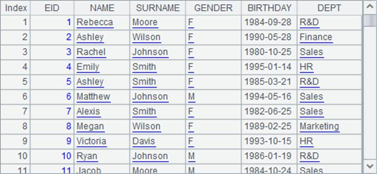

4.2.3 Configuring other databases
esProc allows connecting to a database through JDBC-ODBC bridge. The ODBC driver needs to be prepared manually. The esProc IDE¡¯s ODBC configuration interface is as follows:

Select an ODBC data source for configuration from the list and set related parameters including user name and password.
If the to-be-connected JDBC database isn¡¯t on the list, choose Other type for connection. The configuration interface is as follows:

Put the required JDBC driver in \common\jdbc in esProc¡¯s IDE installation directory and enter the driver name, database URL, and other information on the configuration page.